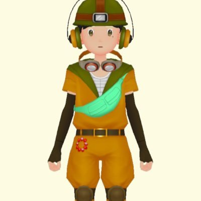

What's WELL-LAB.?
私たちは何者か
WELL-LAB.はヘルスケアや健康管理に関するシステムを開発する学生集団です。
医療とテクノロジーを繋げ、誰もが健康に暮らせるノーマライゼーション社会を目指しています。

Our Goal
私たちの使命
「明日を笑顔に」― それが私たちの合言葉です。
全員が心身ともに健康で、より良い社会を実現すること。
WELL（よく生きる）をキーワードに活動しています。

Our Work
私たちの活動
・学生研究者の発掘とPR
・ヘルスケア/ウェルビーイング関連の共同研究
・自由に交流できるコミュニティ空間の運営
運営メンバー紹介

ちめけ
代表 / 帝京平成大学 医学部8年
Myuu
Engineer / 岡山先端技術スーパーサイエンス大学院 歩行学部11年
Hiroto
Designer / 名古屋工業大学 工学部